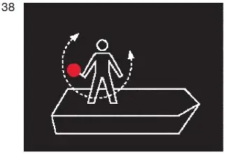
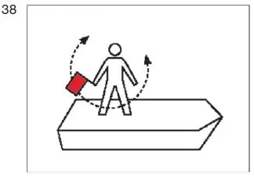

§ 3.18 Zusätzliche Bezeichnung manövrierunfähiger Fahrzeuge in Fahrt(Anlage 3: Bild 38)
Binnenschifffahrtsstraßen-Ordnung
1. Ein manövrierunfähiges Fahrzeug in Fahrt muss zusätzlich zu der anderen nach dieser Verordnung vorgeschriebenen Bezeichnung
a) bei Nacht:
ein rotes Licht zeigen, das im unteren Halbkreis geschwenkt wird; |  |
b) bei Tag:
eine rote Flagge zeigen, die im unteren Halbkreis geschwenkt wird. |  |
Anstelle der Bezeichnung nach Satz 1 kann das vorgeschriebene Schallzeichen gegeben werden oder beides zugleich.
2. Die Flagge nach Nummer 1 Buchstabe b kann durch eine Tafel gleicher Farbe ersetzt werden.